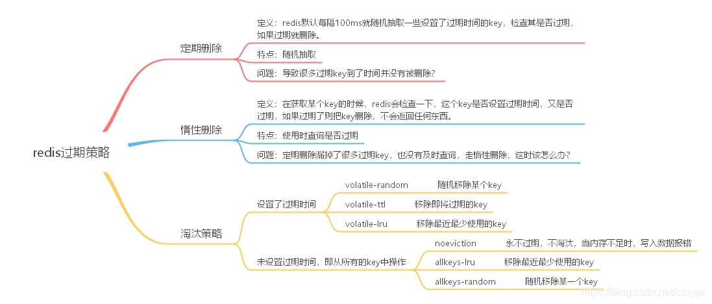

定时删除：在设置键的过期时间时，创建一个定时事件，当过期时间到达时，由事件处理器自动执行键的删除操作。
惰性删除：放任键过期不管，但是在每次从 dict 字典中取出键值时，要检查键是否过期，如果过期的话，就删除它，并返回空；如果没过期，就返回键值。
定期删除：每隔一段时间，对 expires 字典进行检查，删除里面的过期键。
定时删除策略对内存是最友好的： 因为它保证过期键会在第一时间被删除， 过期键所消耗的内存会立即被释放。
这种策略的缺点是， 它对 CPU 时间是最不友好的：因为删除操作可能会占用大量的 CPU 时间 —— 在内存不紧张、但是 CPU 时间非常紧张的时候 （比如说，进行交集计算或排序的时候），将 CPU 时间花在删除那些和当前任务无关的过期键上， 这种做法毫无疑问会是低效的。
除此之外， 目前 Redis 事件处理器对时间事件的实现方式 —— 无序链表， 查找一个时间复杂度为 (O(N)) —— 并不适合用来处理大量时间事件。
惰性删除对 CPU 时间来说是最友好的： 它只会在取出键时进行检查， 这可以保证删除操作只会在非做不可的情况下进行 —— 并且删除的目标仅限于当前处理的键， 这个策略不会在删除其他无关的过期键上花费任何 CPU 时间。
惰性删除的缺点是， 它对内存是最不友好的： 如果一个键已经过期， 而这个键又仍然保留在数据库中， 那么 dict 字典和 expires 字典都需要继续保存这个键的信息， 只要这个过期键不被删除， 它占用的内存就不会被释放。
在使用惰性删除策略时， 如果数据库中有非常多的过期键， 但这些过期键又正好没有被访问的话， 那么它们就永远也不会被删除（除非用户手动执行）， 这对于性能非常依赖于内存大小的 Redis 来说， 肯定不是一个好消息。
举个例子， 对于一些按时间点来更新的数据， 比如日志（log）， 在某个时间点之后， 对它们的访问就会大大减少， 如果大量的这些过期数据积压在数据库里面， 用户以为它们已经过期了（已经被删除了）， 但实际上这些键却没有真正的被删除（内存也没有被释放）， 那结果肯定是非常糟糕。
所以对于大key删除就需要考虑两方面，一是大key过期后仍占用存储空间，二是大key删除会导致其他操作阻塞。因为key中数据比较多上面两个现象会被放大，因此对于大key不要仅仅靠过期时间来保证删除，应该在过期时间之前主动去遍历（scan）删除，过期时间作为最后的删除保证。
从上面对定时删除和惰性删除的讨论来看， 这两种删除方式在单一使用时都有明显的缺陷： 定时删除占用太多 CPU 时间， 惰性删除浪费太多内存。
定期删除是这两种策略的一种折中：
它每隔一段时间执行一次删除操作，并通过限制删除操作执行的时长和频率，籍此来减少删除操作对 CPU 时间的影响；另一方面，通过定期删除过期键，它有效地减少了因惰性删除而带来的内存浪费。
Redis 使用的过期删除策略是惰性删除加上定期删除， 这两个策略相互配合，可以很好地在合理利用 CPU 时间和节约内存空间之间取得平衡。